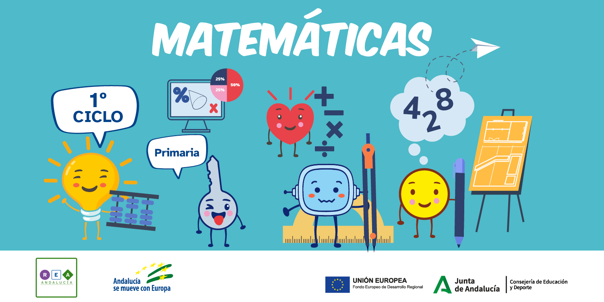

Diccionario Lectura Facilitada
Año bisiesto
 Definición:
Definición:
El año bisiesto tiene 366 días. Febrero tiene 1 día más los años bisiestos. Cada 4 años hay un año bisiesto.
Ejemplo:
El año 2020 fue año bisiesto.
Asamblea
Definición:
Un grupo de personas habla y decide.
Ejemplo:
En la asamblea decidimos ver una película.
Aparato
 Definición:
Definición:
Conjunto de piezas que sirve para hacer una función determinada.
Ejemplo:
El teléfono es un aparato muy útil.
Autoadhesivo
 Definición:
Definición:
Objeto que se pega.
Ejemplo:
Usamos cinta autoadhesiva para hacer los cuerpos geométricos.
Estaciones del año
 Definición:
Definición:
El año se divide en 4 estaciones. Las estaciones son: primavera, verano, otoño e invierno. Las estaciones tienen un clima diferente.
Ejemplo:
El paisaje cambia con las distintas estaciones del año.
Experiencia
 Definición:
Definición:
Conocimientos que una persona o animal tiene sobre la vida. Las personas y animales consiguen experiencia en diferentes situaciones.
Ejemplo:
Mi primo tiene mucha experiencia como pintor.
